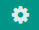
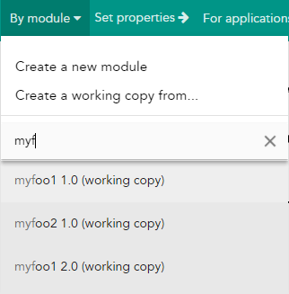
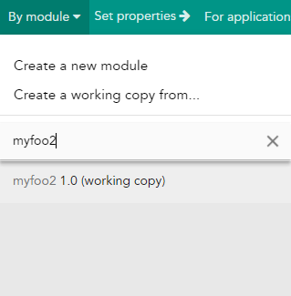
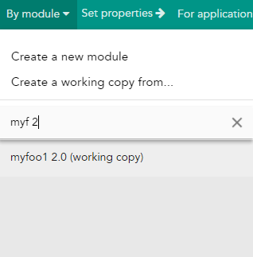
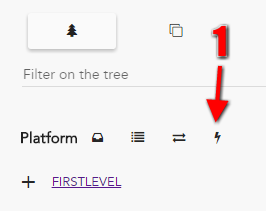
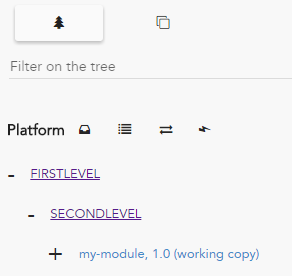
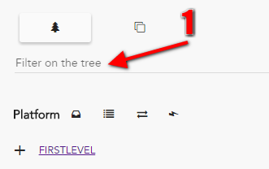
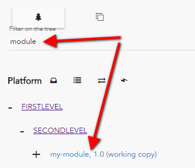

Be careful !
As Hesperides replays events, if you store a template with a lot of data, it can increase the response time dangerously.
In this section you will find some right ways to use Hesperides and some very useful tips that can help you to go faster.
If you have several modules with common templates, it is recommended to create a techno that contains thoses templates, and to inherits techno in each module.
For example, instead of creating three modules that contain two identical templates, create rather a techno that will be inherited on all three modules.
Hesperides is not made for storing large files, particularly for static files (without mustache inside).
As Hesperides replays events, if you store a template with a lot of data, it can increase the response time dangerously.
You can customize settings that can make you the most suitable use by clicking on the icon top right of the screen : 
At any moment you can choose english or french language with the top right icons 
If you need to instrument Hesperides from Jenkins pipelines, a Groovy shared libray is available for you on Github: voyages-sncf-technologies/hesperides-jenkins-lib.
Here is an example of Jenkinsfile that uses it:
API_ROOT_URL = 'https://hesperides.mycompany.com'
node {
withCredentials([[$class: 'UsernamePasswordBinding',
credentialsId: 'HesperidesCredentials',
variable: 'auth']]) {
stage('Releasing module demoKatana-war') {
hesperides.releaseModule(apiRootUrl: API_ROOT_URL,
auth: auth,
moduleName: 'demoKatana-war',
workingcopyVersion: '1.0.0',
releaseVersion: '1.0.0')
}
stage('Setting modules version on platform USN1') {
hesperides.setPlatformModulesVersion(apiRootUrl: API_ROOT_URL,
auth: auth,
app:'KTN',
platform:'USN1',
currentVersion:'1.0.0',
newVersion:'1.0.0')
}
stage('Updating properties of platform USN1 from a JSON file') {
hesperides.updateProperties(apiRootUrl: API_ROOT_URL,
auth: auth,
app: 'KTN',
platform: 'USN1',
jsonPropertyUpdates: 'http://gitlab.mycompany.com/KTN-USN1.json',
commitMsg: 'vsct-hesperides-api tests from Jenkinsfile')
}
}
}Autocomplete is used in several parts of Hesperides. It has a classic usage, a.k.a it gives users the option of completing words or forms by a shorthand method on the basis of what has been typed before.
You can then type a part of module name and a part of the module version (separated by a blank)
For example if we have created those three modules :
| Name starting with "myf" | Exact name of module | Name sarting with "myf" and version starting with "2" |
|---|---|---|
|  |  |  |
You can use "*" : for example m*1 to return myfoo1
Tree mode when you edit platform is very useful because it allows you to surf your platform
| Tip | Operation | Result |
|---|---|---|
| Quick extend |  |  |
| Filter |  |  |
The filtering string will be apply on every stage of your tree : logic group, module name, instance name
Hesperides will alert you in two ways if your platform uses a module that does not exists.